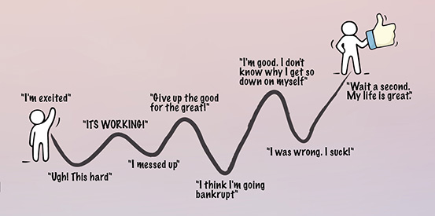

Running a business is extremely difficult.
The worst part is the self-doubt.
Is there a higher purpose to what I am doing?
Should I be spending my time on something else?
Or if you're still thinking about it:
Does God want me to start a business?
In the United States over 9% of people own a business. Yet it is rarely preached about or talked about in church.
So if you're unsure, I want to state it very clearly — God loves business, and He loves that you are in business.
This is something that's incredibly easy to forget.
We need regular reminders. We need to be convinced of this truth again and again.
So I've compiled a list of 11 reasons why God loves business.
When I realized this it totally changed my perspective on what business is, and what we as business owners are called to.
Maybe thinking about it in this way will change your perspective too.
Here it is:
A business is a sustainable and scalable way of loving others.
First, what does loving others have to do with business?
A large part of loving someone is providing for their needs.
And the only way to succeed in our capitalistic society is to provide for other's needs. When you sell a product or service, you sold it because the other person needed it or wanted it.
In this way, being in business can be seen as loving others.
Secondly, a business must have profit and be sustainable. This is Business 101.
Most of us can't serve in the church 8 hours a day. We have jobs we need to be at in order to pay the bills. Serving is limited to a much smaller portion of our time.
It's like a perpetual motion machine — it never stops
But imagine that for each hour you served, you were able to serve an additional hour.
If you served 8 hours on Monday, that would mean you could serve 8 on Tuesday. Serving 8 hours on Tuesday means you can serve 8 hours on Wednesday.
It's like a perpetual motion machine — it never stops.
Eventually everyone would be serving full-time in the church!
But that's not even the crazy part.
It may sound like an outlandish idea, but this is exactly what a business is.
If I'm in business today, I earn profits which let me be in business tomorrow, and on and on and on it goes. By serving my customers and their needs today, I get to serve them tomorrow!
Third, businesses are often scalable.
No, not every business should or can become huge. Many businesses are better off by staying small.
But an organization with many people can do things that no single person could ever do.
They come with economies of scale, and through this scale, businesses can serve others (and love them) more efficiently and effectively.
Being an entrepreneur is one of the easiest careers!
...said no entrepreneur, ever.
If you have a regular job you show up, work 9-5, and leave all your work problems at work.
But if you run a business, these problems follow you home like a dirty, lice-infested lost dog.
In a regular job you can probably guess how your next week is going to go.
Not so with running a business. Your main job is to fix the problems that no one else can. Each day new fires spring up that only you can put out.
Being employed means you don't have to worry about what to do next. That's your manager's job.
But if you run your own business, you are the manager, so you have to make all of the decisions.
It's no wonder that only half of businesses last longer than 5 years.
I love how Elon Musk put it:
Running a startup is like chewing glass and staring into the abyss
There is a silver lining though.
The upside of this is that when we can't rely on ourselves, we can rely on God.
The ups and downs of being an entrepreneur have us one moment rejoicing in God and His blessings, and the next coming back to Him for support and encouragement.
Business throws God-sized challenges at us constantly.
But when we are weak, He is strong.
Our churches are often not that diverse, and it's kind of ridiculous if you ask me.
Most pastors believe that their churches should strive for racial diversity. Yet 87% of churches have only one dominant racial or ethnic group.
That's a pretty big gap between where we are and where we should be.
And it's not just about racial diversity either.
We need diversity in age, stage of life, income, and so many other things. It's not exactly a secret that God loves all types of people and wants them in His church.
Even if you're new to the faith and haven't read much of the bible you probably get this.
Paul didn't limit his church planting and evangelizing efforts only to the Jews. He took advantage of his status as a Roman citizen to bring the gospel to the Romans and other nations and ethnicities.
But it can be difficult for a church to start attracting different types of people. What is the solution?
I have an idea.
It's not a perfect solution, but I think it's a start.
You see, the marketplace represents the true diversity of our world, our cities, and our neighbourhoods. If we start to focus on witnessing to others in the marketplace, we will be able to reach groups of people we otherwise wouldn't be able to.
This is where you and your business come in.
You're already there in the marketplace, day in, day out.
God has already placed you in a perfect position to witness.
As much as we hate it, it's a fact that we can't ignore.
Since at least 1990 — and probably well before then — the number of people attending church regularly has been in a steady decline.
Only 6% of churches are growing
In 1990, a survey showed that 20.4% of people said that they attended church regularly. But people often lie on surveys, so the actual number is probably less than that.
In 2000 that number dropped to 18.7%, and then down again to 17.7% in 2004.
Worse yet, is this scary statistic:
Only 6% of churches are growing.
That means 94% of churches — which is nearly all of them — are going nowhere, shrinking, or shutting their doors altogether.
But there is hope.
People may not be coming to church as much as they used to, but nearly everyone is involved in the marketplace.
Most people have jobs, own businesses, or buy and sell things from each other.
Church is the showroom, where we showcase the best aspects of our faith
The only way to not be involved in the marketplace is if you are a hippie. You would need to be completely self-sufficient, live off the grid, and never interact with any strangers, ever.
I don't have any stats on this one, but I'm willing to guess that 99.9% of people interact in the marketplace in one way or another.
So if someone doesn't attend church, at least we're in the marketplace alongside them.
We have a chance to witness to them. We have a chance to show them God's love and mercy and grace.
Has this happened to you after you purchased something?
Maybe you were in the store, and the salesman was touting all of the features. He even gave you a pretty compelling demo, so you made the purchase.
Maybe it was an online purchase, so you watched a few videos of it in action before deciding to click "Buy".
Either way, once you got it and were able to use it in the "real world"...
Well, it didn't quite live up to your expectations.
Darren Shearer likes to explain it this way. The church is the showroom, where we showcase the best aspects of our faith, everyone is on their best behaviour, and it's all coordinated to give the best impression possible.
But everyone knows when they come to church that they are entering a "show room".
The marketplace, however, is the real world. This is where it really counts.
Others get to see how we respond to stress. They see how we give grace to others, and forgive when the world says we shouldn't.
They see how we're different, and see how we have been transformed through Christ.
The marketplace is one of the best places to witness to others because it is a more authentic showcase of what Christianity is, and what Christianity offers.
Every time I go on a retreat, or on a missions trip, or any other church event like this, I feel the same way.
You probably know the feeling I'm talking about.
Some describe it as a "spiritual high".
Being surrounded by lots of other Christians who are intent on growing in their faith rubs off on you. It encourages you to go deeper with your own faith.
Unfortunately, most people who attend church only spend part of Sunday morning worshipping, praying, and studying God's word with others.
They don't really get to experience being surrounded by other believers.
But here's the cool part.

Some Christian businesses go out of their way to provide this experience to their employees.
Even if it's just a little.
Sometimes it's something as simple as a weekly bible study.
Praying together is another great way they do this. Non-Christians are sometimes interested in participating as well, and it can be a great way to introduce them to the gospel.
I've even seen businesses bring in a corporate chaplain — they've usually gone to seminary and have spent time working, so they understand both faith and the marketplace.
Without businesses, we wouldn't be doing very well with the cultural mandate.
Genesis 1:28 says:
And God said to them, "Be fruitful and multiply and fill the earth and subdue it, and have dominion over the fish of the sea and over the birds of the heavens and over every living thing that moves on the earth."
Nancy Pearson gives a great explanation for what this means for us in her book, Total Truth.
Businesses are what create and apply new innovations that propel our society forward
The first phrase, 'be fruitful and multiply,' means to develop the social world: build families, churches, schools, cities, governments, laws.
The second phrase, 'subdue the earth,' means to harness the natural world: plant crops, build bridges, design computers, and compose music. This passage is sometimes called the Cultural Mandate because it tells us that our original purpose was to create cultures, build civilizations—nothing less.
Planting crops, building bridges, designing computers — these are the types of things that businesses do. Businesses, and the marketplace more generally, is how our society fulfills the cultural mandate.
Businesses are what create and apply new innovations that propel our society forward.
These new innovations bring people out of poverty, save lives, and increase the standard of living for everyone.
Businesses also maintain what we have already built.
They keep our lights on, our water flowing, and our banks open.
God has given us this mandate, and by being in business we are helping to fulfill it. Even if it's a tiny step forward, we are doing the work that God has commanded us to do.
Unfortunately, not everyone has a job.
But when someone does, it provides financial security for their families, a sense of belonging, and gives them the emotional well-being and satisfaction that comes from doing good work.
Many businesses, Christian or not, go beyond just providing jobs. They look for ways that they can help those who are at a disadvantage, and give them a second chance.
Self-sufficiency is a thing of the past
I'll give you a few great examples.
The Delancey Street Foundation provides housing and jobs for ex-convicts and the homeless.
They run several businesses including a cafe, landscaping company, and a moving company. Through these businesses they teach valuable skills to help their employees become more employable, and help them stay off of the streets (and out of jail).
But you don't have to be a large organization to do this.
There are Christian business owners like Bill Fuchs, who runs a small landscaping and cleaning company.
He uses his business to serve his church and others in the community, and that includes looking for people who wouldn't otherwise be able to get a job.
I bet that you employ at least some of the following people:
As we touched on earlier, it's likely that you aren't completely self-sufficient. You rely on other businesses to help you get your job done!
No, it's not exactly like employing them.
But without people like you giving them business, they wouldn't have a job. Indirectly employing someone is still helpful.
An important concept in economics is specialization.
Here's the gist of it.
We maximize our productivity by specializing, focusing, and getting extremely good at one thing instead of being mediocre at a lot of things.
Then we have to trade with others to get what we need. We used to barter, but today we just use money.
Because of this trading, we are brought together in community with one another. We are forced to rely on each other for daily needs, and we can no longer survive on our own.
Self-sufficiency is a thing of the past.
So in this way, specialization breeds interdependence, which in turn breeds community.
And God designed us to be living in community, to be social, and to be with others.
This is the way the early Church in Acts operated, and it's how we should strive to operate as well.
It's hard to get much done without having any money.
The church needs money to operate, to pay staff, fix the building, and for ministries. We need people to give money, and business owners often have a lot of it.
I can hear your objections now, and you're right.
Just because you own a business doesn't mean you are rich. Lots of small businesses are struggling to get by and to make ends meet. But typically the people who have the most money to give are the ones who run successful businesses.
Jesus teaches us quite clearly that we are to be good stewards of our money. The money isn't ours, but God's to use as He desires.
Being richer is also correlated with higher levels of happiness
You might say, "God can do anything! He doesn't need our money!"
You'd be right.
Maybe God is crazy (I highly doubt it), but He has chosen to use us to further His kingdom. If He is all-powerful He doesn't need us to plant churches or to even evangelize. Yet He decided He was going to use us as tools for His kingdom.
So go out and make as much money as you can and give it back to God!
Now, some business owners think that giving money to the church is the only thing that they are good for.
This is completely wrong.
Hopefully it's obvious throughout the rest of this article (and this site) that there are so many other ways in which businesses can bring glory to God and serve Him.
Capitalism often gets a bad rap these days, but it's all just a big misunderstanding.
It's by far the best economic system us humans have developed.
Socialism and communism have been tried in the past, and we all know how badly those experiments have failed.
The book Counting the Cost: Christian Perspectives on Capitalism shows how much our wealth has increased because of capitalism over the last couple of centuries. And there are lots of other benefits to capitalism too.
And it's not just the rich getting richer. As a rising tide lifts all boats, everyone is getting richer and benefitting from this newfound wealth — even the poor.
In his book, Enlightenment Now, Steven Pinker shows us all the ways that our world benefits from being richer, many of which are completely unintuitive.
Higher GDP per capita is correlated with:
Being richer is also correlated with higher levels of happiness (although money doesn't always buy happiness).
Not only that, but countries even get smarter as they gain wealth, because they are better able to unlock the potential of their people.
As you can see, capitalism is a major force for good.
And without business — without entrepreneurs like you — capitalism no longer works.
I've only been able to cover a few of them here.
To sum up:
Which of these do you agree with most?
Maybe you disagree with one of them?
Or maybe you have your own reasons that I missed.
If you enjoyed this article, please share this with someone — it would mean a lot!
Mention your favourite reason, one you disagree with, or one that I completely missed.
It could be the start of an interesting discussion!